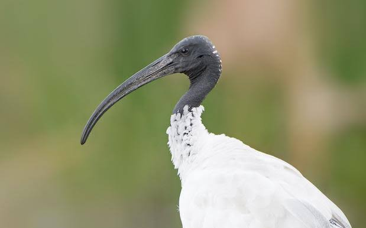

Ibis
Birds
The ibises are a group of long-legged wading birds in the family Threskiornithidae, that inhabit wetlands, forests and plains. "Ibis" derives from the Latin and Ancient Greek word for this group of birds. It also occurs in the scientific name of the cattle egret, mistakenly identified in 1757 as being the sacred ibis.
Order: Pelecaniformes
Scientific name: Threskiornithinae
Length: African sacred ibis: 65 – 75 cm
Mass: African sacred ibis: 1.5 kg
Kingdom: Animalia
Rank: Subfamily
Ibis, any of about 26 species of medium-sized wading birds constituting the subfamily Threskiornithinae of the family Threskiornithidae (order Ciconiiformes), which also includes the spoonbills. Ibises range in length from about 55 to 75 cm (22 to 30 inches).
They occur in all warm regions except on South Pacific islands. They wade in shallow lagoons, lakes, bays, and marshes and use their slender, down-curved bills to feed on small fishes and soft mollusks.
They fly with neck and legs extended, alternately flapping and sailing. Ibises usually breed in vast colonies, building compact stick nests low in bushes or trees and laying three to five eggs, usually dull white or mottled with brown.
The glossy ibis (Plegadis falcinellus) and its close relative the white-faced ibis (P. chihi) are small forms with dark reddish brown and glossy purplish plumage. As a group they are found throughout the warmer regions of the world.
The hermit ibis (Geronticus eremita), an endangered species, inhabits northern Africa and the Middle East. Its bill and the bare skin on its head are reddish.
Breeding colonies once existed in central and southern Europe, Syria, and Algeria but are now known only in Turkey and Morocco.
The Japanese, or crested, ibis (Nipponia nippon) is white with a red face. An endangered species, it was considered to be on the verge of extinction in the late 20th century.
The sacred ibis (Threskiornis aethiopica), of southern Arabia and Africa south of the Sahara and formerly of Egypt, was sacred to the ancient Egyptians. It is about 75 cm (30 inches) long, white with black in its wings, and has dark plumes on the lower back and a bare black head and neck.
The scarlet ibis (Eudocimus ruber) inhabits northern South America, and the white ibis (E. albus) ranges in Central and North America.
Biology of Ibis
Taxonomy
It was initially described by Georges Cuvier in 1829 as Ibis molucca. It is considered part of a superspecies complex with the sacred ibis (T. aethiopicus) of Africa, and the black-headed ibis (T. melanocephalus) of Asia.
Its status in the complex has vacillated over the years. Many older guidebooks referred to the bird as a species T. molucca, until a comprehensive review of plumage patterns by Holyoak in 1970.
Holyoak noted the three species' similarities and that the Australian taxon resembled T. aethiopicus in adult plumage and T. melanocephalus in juvenile plumage. He proposed they all be considered part of a single species T. aethiopicus.
This was generally accepted by the scientific community until Lowe and Richards's assessment of plumage in 1991.
They again recommended the recognition of molucca at species level. This was followed by chromosome study which highlighted each of the three species having a different karyotype.[] The Australian white ibis has been considered a full species by most authorities since then.
Distribution and habitat
The Australian white ibis is widespread in eastern, northern and south-western Australia. It occurs in marshy wetlands, often near open grasslands and has become common in Australian east-coast city parks and rubbish dumps in the urban areas of Wollongong, Sydney, Perth, the Gold Coast, Brisbane and Townsville.
Historically it was rare in urban areas; the first influx was noted after drought drove birds eastwards in the late 1970s. The urban population further increased after a further period of drought in 1998.
The first big colony set up in the Sydney suburb of Bankstown and started to cause anxiety in the local community. It is estimated the colony was the largest outside the Macquarie Marshes, their natural breeding wetland in inland NSW.
There has been debate in recent years over whether to consider them a pest or a possibly endangered species. Birds in tourist areas of Sydney, such as Darling Harbour, the Royal Botanic Gardens, and Centennial Park, have been a problem due to their strong smell.
Populations in the latter two areas have been culled.[] The birds have also come to be regarded as a problem species in Victoria as a result of their scavenging activities, scattering rubbish from tips and bins in the process.
They are even known to snatch sandwiches from picnickers. Such behaviour, together with their propensity to build nests in "inappropriate" places, and competition with captive animals, led to surplus birds being relocated from Healesville Sanctuary to Sale. However, the birds returned in a few days.
Feeding
The Australian white ibis' range of food includes both terrestrial and aquatic invertebrates and human scraps. The most favoured foods are crayfish and mussels, which the bird obtains by digging with its long bill.
Breeding
Breeding season varies with the location within Australia, generally August to November in the south, and February to May, after the wet season, in the north.
The nest is a shallow dish-shaped platform of sticks, grasses or reeds, located in trees and generally near a body of water such as river, swamp or lake.
Ibises commonly nest near other waterbirds such as egrets, herons, spoonbills or cormorants. Two to three dull white eggs are laid measuring 65 mm × 44 mm.
The clutch is then incubated for 21–23 days. Hatchlings are altricial, that is, they are naked and helpless at birth, and take 48 days to fledge.